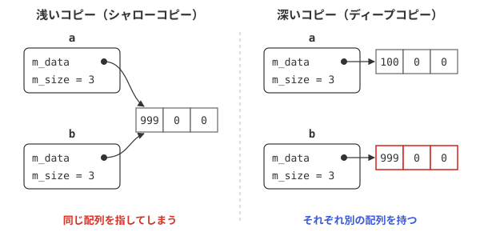

オブジェクトのコピー
コピーは自動的に作られる
int 型の変数を別の変数に代入すると、値がコピーされます。クラスのオブジェクトも同じように、Sample b = a; や b = a; と書けばコピーできます。これは、コンパイラがコピーのための関数を自動的に用意してくれるからです。自動的に用意されるコピーは、メンバ変数を1つずつそのままコピーするものです。
応用編7日目の Vector2 クラスのように、メンバ変数が数値だけのクラスなら、これで問題ありません。ところが、メンバ変数にポインタを持ち、new で確保したメモリを管理しているクラスでは、困ったことが起こります。
浅いコピーの問題
サンプルプログラム
次のサンプルの IntArray クラスは、コンストラクタで整数の配列を new で確保し、デストラクタで delete するクラスです。このクラスのオブジェクトをコピーしてみましょう。
#include <iostream>
using namespace std;
// 整数の配列を管理するクラス（コピーの対策をしていない）
class IntArray{
private:
int* m_data; // 動的に確保した配列
int m_size; // 要素数
public:
IntArray(int size) : m_data(new int[size]), m_size(size){
for (int i = 0; i < m_size; i++){
m_data[i] = 0;
}
}
~IntArray(){
delete[] m_data;
}
void set(int index, int value){ m_data[index] = value; }
int get(int index) const { return m_data[index]; }
int* address() const { return m_data; }
};
int main(){
IntArray a(3);
a.set(0, 100);
IntArray b = a; // aをコピーしてbを作る
b.set(0, 999); // bだけを書き換えたつもり
cout << "a[0] = " << a.get(0) << endl;
cout << "b[0] = " << b.get(0) << endl;
cout << "aの配列の場所：" << a.address() << endl;
cout << "bの配列の場所：" << b.address() << endl;
return 0;
} // ここで a と b のデストラクタが、同じ配列を2回 delete してしまう
b[0] = 999
aの配列の場所：000002771ED16CC0
bの配列の場所：000002771ED16CC0
← この後、プログラムが異常終了する
何が起きたのか
27行目で a をコピーして b を作り、28行目で b の要素だけを書き換えました。ところが、実行結果を見ると a[0] まで 999 に変わっています。
その理由は、配列の場所（アドレス）を表示した31行目・32行目の結果からわかります。a と b の m_data は、同じ配列を指しているのです。自動的に用意されるコピーは、メンバ変数 m_data（ポインタ）の値、つまりアドレスをそのままコピーするだけで、配列そのものはコピーしません（図S3-1の左）。このようなコピーを浅いコピー（シャローコピー）と言います。
さらに深刻なのは、main() を抜けるときです。a と b のデストラクタがそれぞれ呼ばれ、同じ配列を2回 delete してしまいます。一度解放したメモリをもう一度解放するのは誤りで、プログラムが異常終了する原因になります。

図S3-1：浅いコピーと深いコピー
この問題を解決するには、コピーするときに配列も新しく確保して、中身をコピーする必要があります（図S3-1の右）。このようなコピーを深いコピー（ディープコピー）と言います。深いコピーを行うには、コピーのための関数を自分で定義します。
コピーコンストラクタと代入演算子
サンプルプログラム
IntArray クラスに、深いコピーを行うコピーコンストラクタと代入演算子を追加します。
#include <iostream>
using namespace std;
// 整数の配列を管理するクラス（コピーに対応）
class IntArray{
private:
int* m_data; // 動的に確保した配列
int m_size; // 要素数
public:
IntArray(int size) : m_data(new int[size]), m_size(size){
for (int i = 0; i < m_size; i++){
m_data[i] = 0;
}
}
// コピーコンストラクタ（深いコピー）
IntArray(const IntArray& other) : m_data(new int[other.m_size]), m_size(other.m_size){
for (int i = 0; i < m_size; i++){
m_data[i] = other.m_data[i];
}
cout << "コピーコンストラクタ" << endl;
}
// 代入演算子（深いコピー）
IntArray& operator=(const IntArray& other){
if (this != &other){ // 自分自身への代入は何もしない
delete[] m_data; // 今の配列を解放する
m_size = other.m_size;
m_data = new int[m_size]; // 新しい配列を確保する
for (int i = 0; i < m_size; i++){
m_data[i] = other.m_data[i];
}
}
cout << "代入演算子" << endl;
return *this;
}
~IntArray(){
delete[] m_data;
}
void set(int index, int value){ m_data[index] = value; }
int get(int index) const { return m_data[index]; }
};
int main(){
IntArray a(3);
a.set(0, 100);
IntArray b = a; // コピーコンストラクタが呼ばれる
b.set(0, 999);
IntArray c(5);
c = a; // 代入演算子が呼ばれる
cout << "a[0] = " << a.get(0) << endl;
cout << "b[0] = " << b.get(0) << endl;
cout << "c[0] = " << c.get(0) << endl;
return 0;
}
代入演算子
a[0] = 100
b[0] = 999
c[0] = 100
今度は、b を書き換えても a は変わらず、プログラムも正常に終了します。
コピーコンストラクタ
17行目から22行目がコピーコンストラクタです。コピーコンストラクタは、同じクラスのオブジェクトを const 参照で受け取るコンストラクタで、オブジェクトをコピーして新しいオブジェクトを作るときに呼ばれます。
ここでは、コピー元（other）と同じ大きさの配列を new で新しく確保し（17行目）、要素を1つずつコピーしています（18行目〜20行目）。これで、a と b はそれぞれ別の配列を持つようになります。
コピーコンストラクタは、次のような場面で呼ばれます。
IntArray b = a;やIntArray b(a);のように、別のオブジェクトをもとにして、新しいオブジェクトを作るとき（46行目）- オブジェクトを関数の引数に値渡しするとき
- 関数の戻り値としてオブジェクトを返すとき
const IntArray& arr のように const 参照で渡すと、コピーが起きないので効率的です（応用編1日目・2日目参照）。代入演算子
24行目から35行目が代入演算子です。代入演算子は、すでにあるオブジェクトに、別のオブジェクトを代入するとき（49行目）に呼ばれます。応用編7日目で学んだ演算子の多重定義の書き方で定義します。
代入演算子では、コピーコンストラクタと違って、代入される側がすでに配列を持っています。そのため、次の手順で処理します。
- 自分自身への代入かを確認する（25行目）：
a = a;のような場合に、次の手順で自分の配列を解放してしまうと、コピー元のデータも失われてしまいます。this（自分自身のアドレス）と other のアドレスが同じなら、何もしません。 - 今の配列を解放する（26行目）
- 新しい配列を確保して、中身をコピーする（27行目〜31行目）
- *this を返す（34行目）：
a = b = c;のように続けて代入できるようにするためです。
コピーと代入の見分け方
= を使っていても、46行目の IntArray b = a; は、新しいオブジェクト b を作りながら初期化しているので、コピーコンストラクタが呼ばれます。49行目の c = a; は、すでにある c に代入しているので、代入演算子が呼ばれます。
Rule of Three
3つはセットで用意する
lists3-2 の IntArray のように、クラスが new で確保したメモリなどの資源を管理している場合は、次の3つの関数をすべて自分で定義する必要があります。
| 関数 | 役割 |
|---|---|
| デストラクタ | 確保した資源を解放する |
| コピーコンストラクタ | 資源も含めてコピーし、新しいオブジェクトを作る |
| 代入演算子 | 今の資源を解放してから、資源も含めてコピーする |
「このうちどれか1つを自分で定義する必要があるクラスは、残りの2つも定義する必要がある」という経験則を、Rule of Three（3の規則）と言います。デストラクタで delete しているのに、コピーコンストラクタや代入演算子を定義していなければ、lists3-1 と同じ問題が起こります。
コピーを禁止する
オブジェクトをコピーする必要がないクラスなら、コピーそのものを禁止するという方法もあります。コピーコンストラクタと代入演算子を、private で宣言だけしておくと、クラスの外でコピーしようとしたときにビルドエラーになります。
private:
IntArray(const IntArray& other);
IntArray& operator=(const IntArray& other);
…
};
= delete）や、コピーの代わりに中身を「移動」するしくみ（ムーブ）があります。これらはモダンC++で学びます。